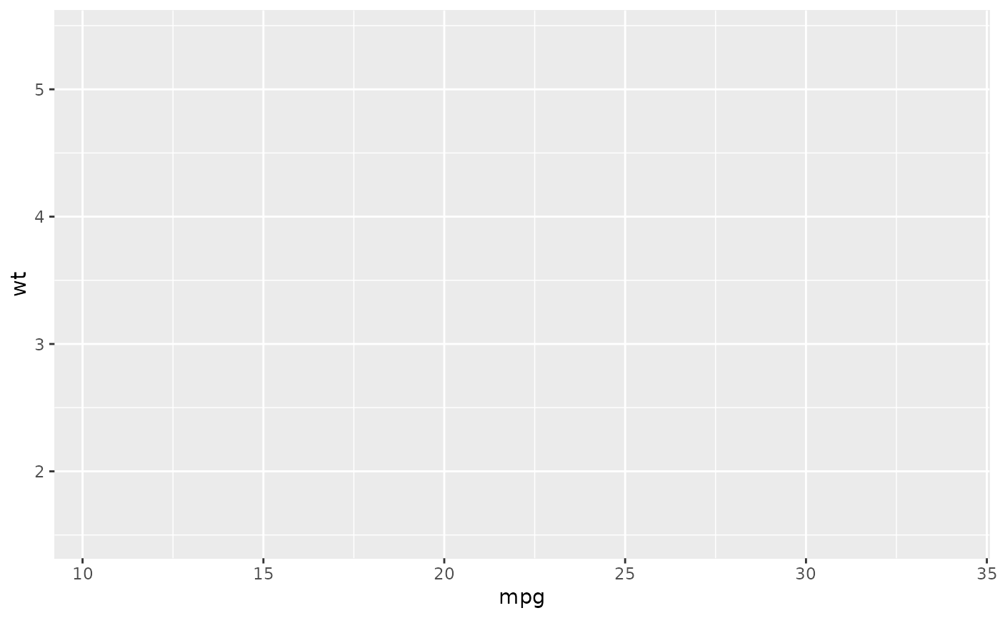

Generate code to create a `ggplot`
ggcall(data = NULL, mapping = NULL, geom = NULL, geom_args = list(), scales = NULL, scales_args = list(), coord = NULL, labs = list(), theme = NULL, theme_args = list(), facet = NULL, facet_args = list())
| data | Character. Name of the |
|---|---|
| mapping | List. Named list of aesthetics. |
| geom | Character. Name of the geom to use (without "geom_"). |
| geom_args | List. Arguments to use in the geom. |
| scales | Character vector. Scale(s) to use (without "scale_"). |
| scales_args | List. Arguments to use in scale(s),
if |
| coord | Character. Coordinates to use (without "coord_"). |
| labs | List. Named list of labels to use for title, subtitle, x & y axis, legends. |
| theme | Character. Name of the theme to use (without "theme_"). |
| theme_args | List. Named list for theme arguments. |
| facet | Character vector. Names of variables to use as facet. |
| facet_args | List. Named list for facet arguments. |
a call
# Default: ggcall()#> ggplot()#> ggplot(mtcars) + aes(x = mpg, y = wt)#> ggplot(mtcars) + aes(x = mpg, y = wt) + geom_point()# With options ggcall( data = "mtcars", mapping = list(x = "hp", y = "cyl", fill = "color"), geom = "bar", coord = "flip", labs = list(title = "My title"), theme = "minimal", facet = c("gear", "carb"), theme_args = list(legend.position = "bottom") )#> ggplot(mtcars) + aes(x = hp, y = cyl, fill = color) + geom_bar() + #> labs(title = "My title") + coord_flip() + theme_minimal() + #> theme(legend.position = "bottom") + facet_wrap(vars(gear, #> carb))# One scale ggcall( data = "mtcars", mapping = list(x = "mpg", y = "wt", color = "qsec"), geom = "point", scales = "color_distiller", scales_args = list(palette = "Blues") )#> ggplot(mtcars) + aes(x = mpg, y = wt, color = qsec) + geom_point() + #> scale_color_distiller(palette = "Blues")# Two scales ggcall( data = "mtcars", mapping = list(x = "mpg", y = "wt", color = "qsec", size = "qsec"), geom = "point", scales = c("color_distiller", "size_continuous"), scales_args = list( color_distiller = list(palette = "Greens"), size_continuous = list(range = c(1, 20)) ) )#> ggplot(mtcars) + aes(x = mpg, y = wt, color = qsec, size = qsec) + #> geom_point() + scale_color_distiller(palette = "Greens") + #> scale_size_continuous(range = c(1, 20))